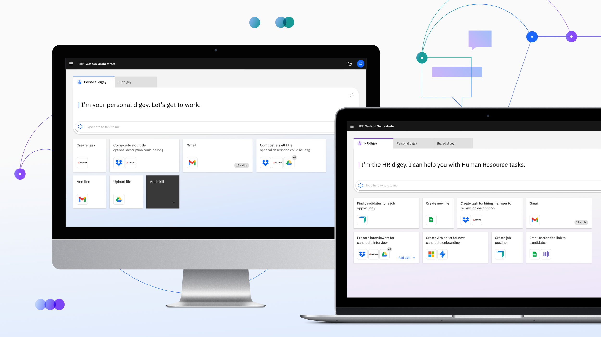
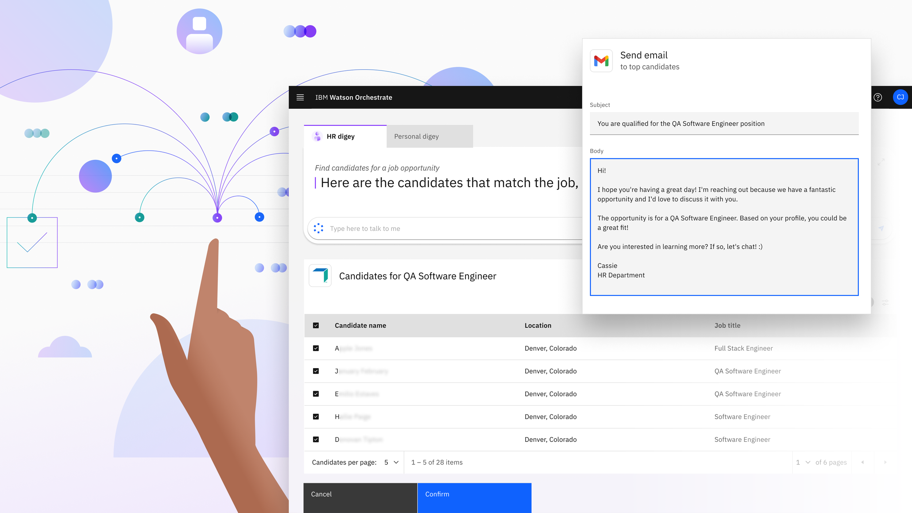
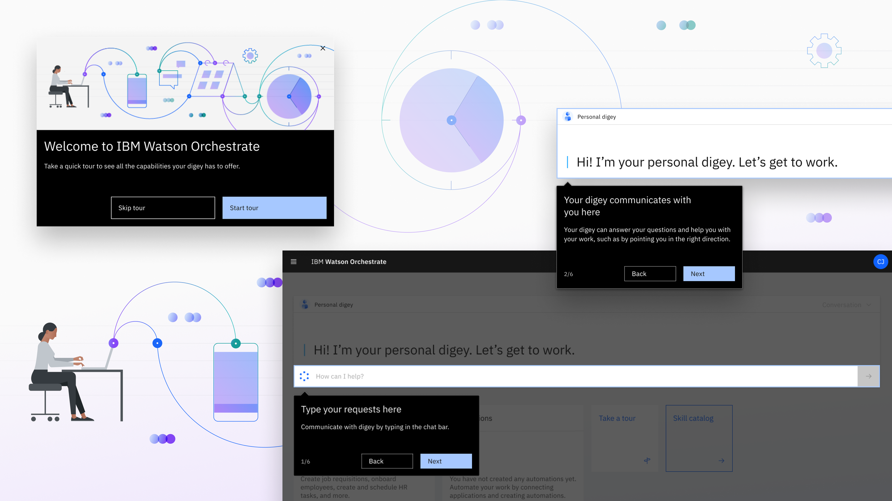
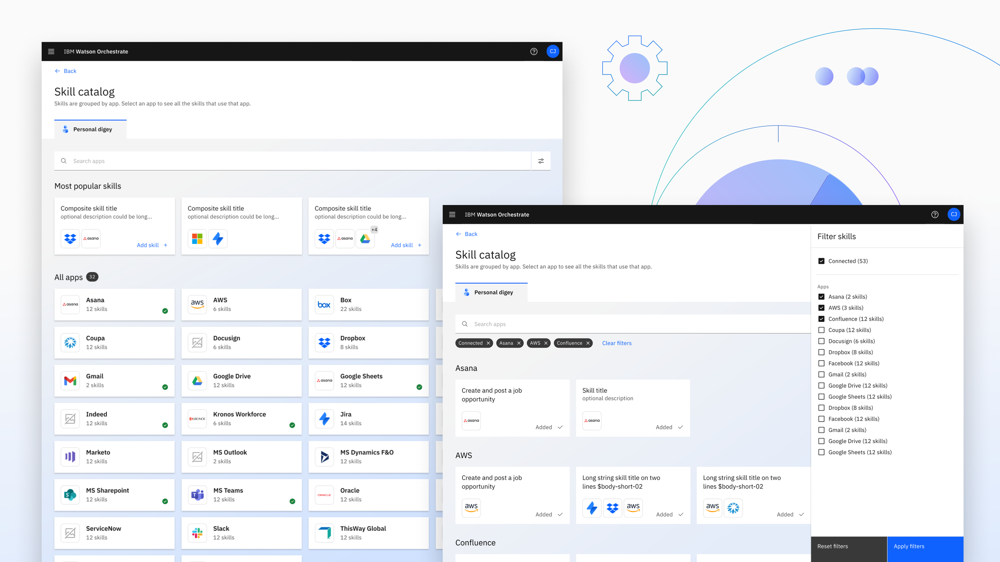

IBM Watson Orchestrate
IBM Watson Orchestrate is a digital assistant AI software. Our team set out to remove the boring/repetitive
tasks that a user has to do in a fun and engaging way. The experience was created to allow for simplified UX and
engaging visuals.

The ask
How can we create an engaging digital assistant to help users focus on knowledge work while repetitive task work is automated?
Visuals
Working as part of a multidisciplinary team, I created the UI for Watson Orchestrate. With a signature colour pallet, the design featured typical IBM branding, but retained its own independence.



